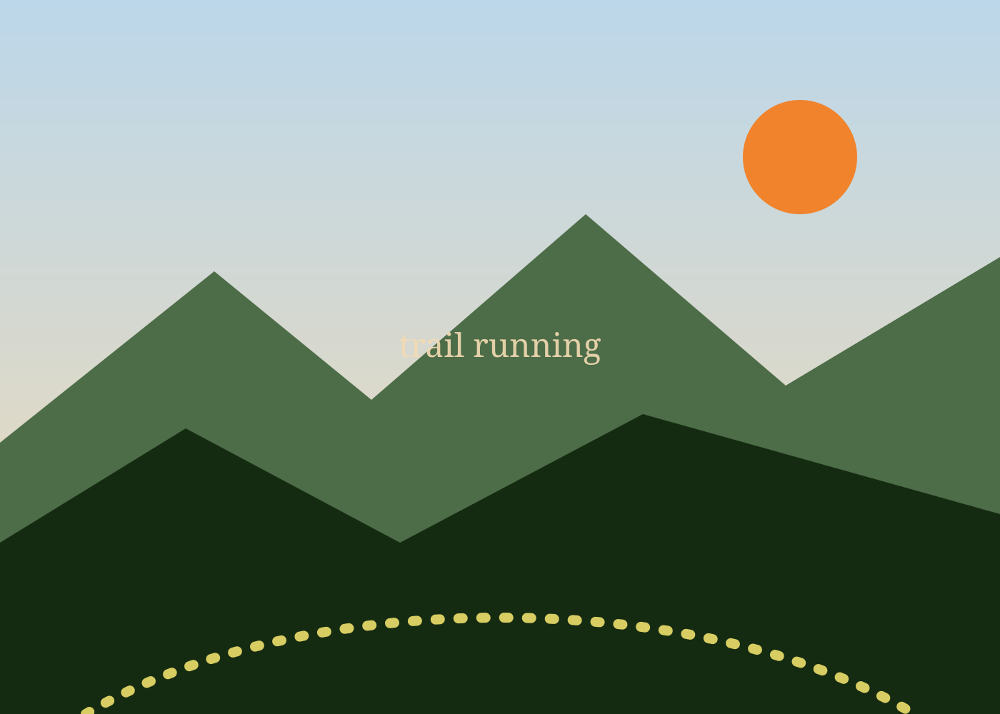
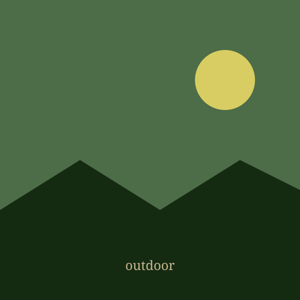
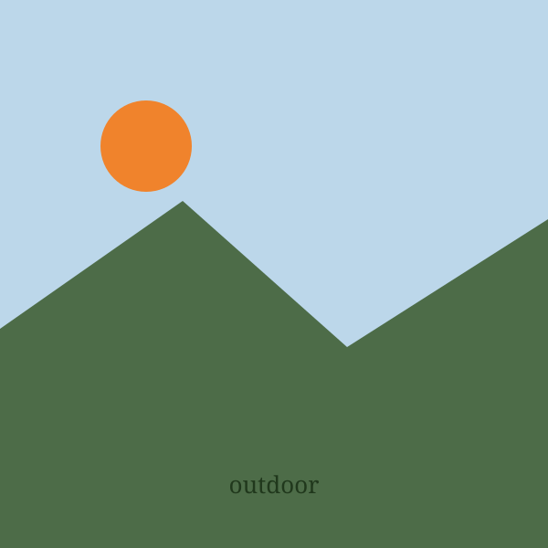
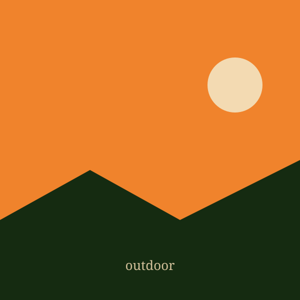
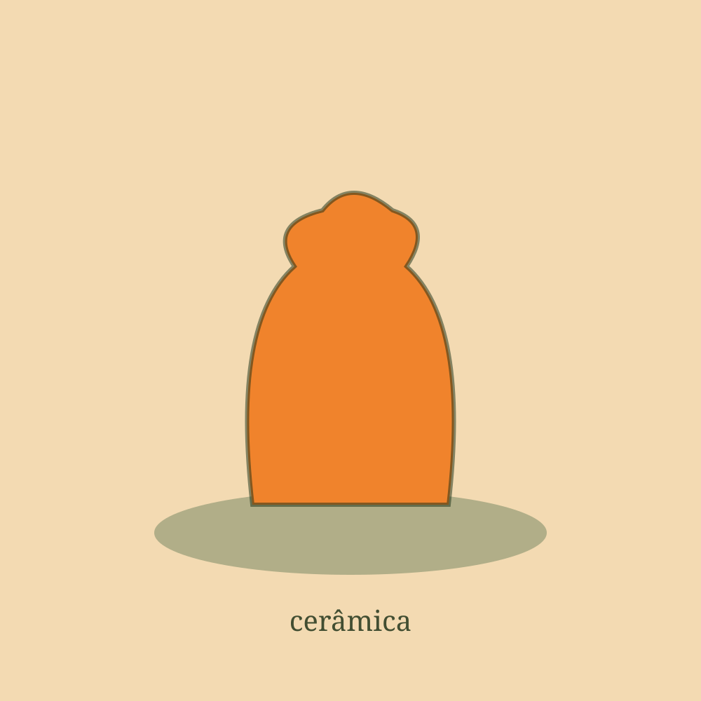
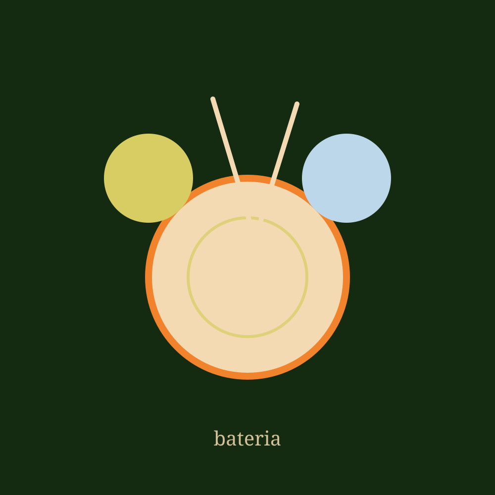

Além da tecnologia Beyond technology
O que me mantém viva fora da tela: trilhas, ar livre, argila e batidas. What keeps me alive away from the screen: trails, fresh air, clay and beats.

Meu hobby nº 1 My #1 hobby
Correr em trilhas é onde corpo e mente entram em equilíbrio. Cada subida é um lembrete de que o esforço e a natureza andam juntos — e é aí que eu me sinto mais eu mesma. Running on trails is where body and mind find balance. Every climb reminds me that effort and nature go hand in hand — and that's where I feel most like myself.
Compartilho meu estilo de vida outdoor no Instagram. I share my outdoor lifestyle on Instagram.




Com as mãos With my hands
Moldar a argila é meu jeito de desacelerar e criar com calma. Da bagunça molhada a uma peça única — pura criatividade no tempo das mãos. Shaping clay is how I slow down and create with patience. From wet mess to a one-of-a-kind piece — pure creativity at the pace of my hands.

No ritmo On the beat
A bateria é minha válvula de energia. Tocar é colocar para fora tudo o que sinto e entrar num estado de foco que poucas coisas me dão. Drumming is my energy outlet. Playing lets me release everything I feel and enter a focus state few things give me.